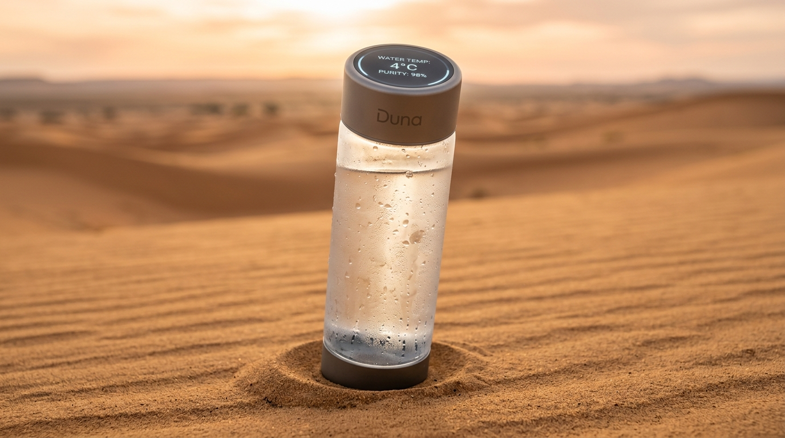
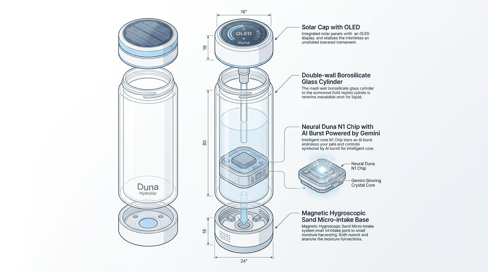
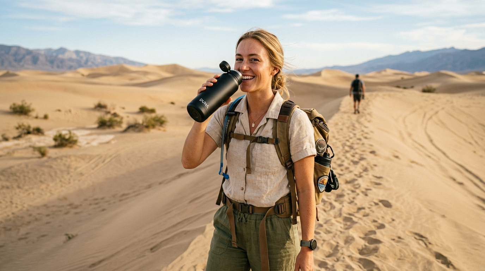
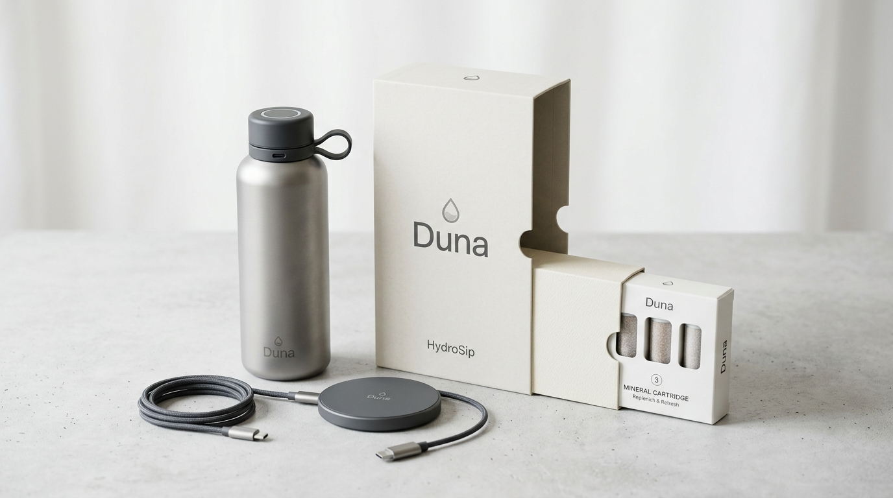

Apresentamos a Duna HydroSip™. Uma garrafa inteligente construída em titânio aeroespacial e vidro térmico que extrai a umidade presa nos grãos de areia, mineraliza com eletrólitos naturais e entrega água gelada no meio de qualquer trilha árida — agora com aceleração por IA em apenas 3 minutos.

Como o chip Duna N1 e os modelos Gemini Nano embarcados coordenam a separação molecular de umidade na areia mais seca do planeta.

Células solares de alta absorção alimentam a bateria interna de grafeno mesmo em dias nublados, mantendo o display sempre ativo.
A água condensada é resfriada a 4°C no instante em que entra no compartimento e se mantém gelada por mais de 24 horas.
O algoritmo do Gemini mapeia os micro-espaços vazios entre os grãos de areia e sincroniza os pulsos magnéticos da base, reduzindo o tempo de enchimento de 25 para 3 minutos.
Milhares de micro-orifícios com filtros eletrostáticos impedem que qualquer grão de poeira entre, capturando exclusivamente moléculas puras de H₂O.
Assista ao comercial oficial gravado em resolução máxima nas dunas do deserto.
Jingle exclusivo de lançamento da Duna HydroSip.
Esqueça carregar galões pesados. A Duna HydroSip foi pensada para trilheiros, atletas e viajantes que precisam de hidratação ilimitada com peso mínimo na mochila.

Basta apoiar a base da garrafa 3 cm na areia. Os micro-canais de sucção higroscópica iniciam o ciclo automaticamente.
A água condensada passa por esferas de rocha vulcânica que devolvem magnésio, potássio e cálcio na proporção ideal.
A tampa com célula fotovoltaica mantém a garrafa sempre carregada sob a luz natural do dia.
Cada detalhe foi desenhado com simplicidade e respeito ambiental. Embalagem 100% reciclável, livre de plástico virgem.

Veja quanto tempo leva para sua garrafa encher conforme as condições da duna.
Algoritmo termodinâmico neural embarcado no chip Duna N1. O modelo Gemini prevê micro-gradientes de umidade na matriz de sílica em nanossegundos, modulando os microporos magnéticos para acelerar a extração em até 60%.